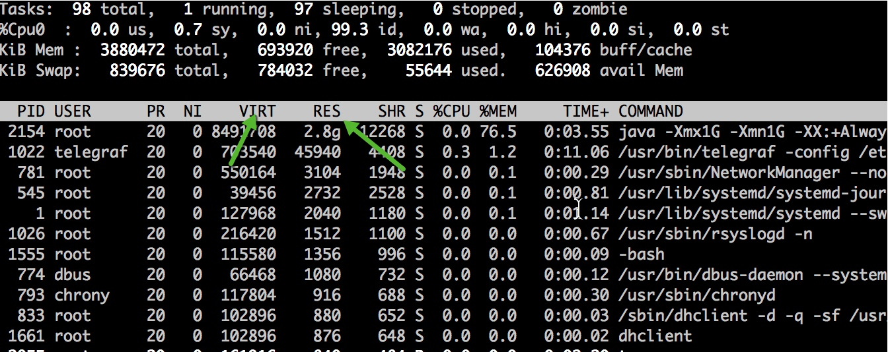
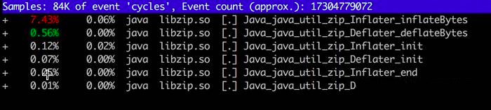

- 00 开篇词：JVM，一块难啃的骨头.md.html
- 01 一探究竟：为什么需要 JVM？它处在什么位置？.md.html
- 02 大厂面试题：你不得不掌握的 JVM 内存管理.md.html
- 03 大厂面试题：从覆盖 JDK 的类开始掌握类的加载机制.md.html
- 04 动手实践：从栈帧看字节码是如何在 JVM 中进行流转的.md.html
- 05 大厂面试题：得心应手应对 OOM 的疑难杂症.md.html
- 06 深入剖析：垃圾回收你真的了解吗？（上）.md.html
- 07 深入剖析：垃圾回收你真的了解吗？（下）.md.html
- 08 大厂面试题：有了 G1 还需要其他垃圾回收器吗？.md.html
- 09 案例实战：亿级流量高并发下如何进行估算和调优.md.html
- 10 第09讲：案例实战：面对突如其来的 GC 问题如何下手解决.md.html
- 11 第10讲：动手实践：自己模拟 JVM 内存溢出场景.md.html
- 12 第11讲：动手实践：遇到问题不要慌，轻松搞定内存泄漏.md.html
- 13 工具进阶：如何利用 MAT 找到问题发生的根本原因.md.html
- 14 动手实践：让面试官刮目相看的堆外内存排查.md.html
- 15 预警与解决：深入浅出 GC 监控与调优.md.html
- 16 案例分析：一个高死亡率的报表系统的优化之路.md.html
- 17 案例分析：分库分表后，我的应用崩溃了.md.html
- 18 动手实践：从字节码看方法调用的底层实现.md.html
- 19 大厂面试题：不要搞混 JMM 与 JVM.md.html
- 20 动手实践：从字节码看并发编程的底层实现.md.html
- 21 动手实践：不为人熟知的字节码指令.md.html
- 22 深入剖析：如何使用 Java Agent 技术对字节码进行修改.md.html
- 23 动手实践：JIT 参数配置如何影响程序运行？.md.html
- 24 案例分析：大型项目如何进行性能瓶颈调优？.md.html
- 25 未来：JVM 的历史与展望.md.html
- 26 福利：常见 JVM 面试题补充.md.html
- 捐赠
14 动手实践：让面试官刮目相看的堆外内存排查
本课时我们主要讲解让面试官刮目相看的堆外内存排查。
第 02 课时讲了 JVM 的内存布局，同时也在第 08 课时中看到了由于 Metaspace 设置过小而引起的问题，接着，第 10 课时讲了一下元空间和直接内存引起的内存溢出实例。
Metaspace 属于堆外内存，但由于它是单独管理的，所以排查起来没什么难度。你平常可能见到的使用堆外内存的场景还有下面这些：
- JNI 或者 JNA 程序，直接操纵了本地内存，比如一些加密库；
- 使用了Java 的 Unsafe 类，做了一些本地内存的操作；
- Netty 的直接内存（Direct Memory），底层会调用操作系统的 malloc 函数。
使用堆外内存可以调用一些功能完备的库函数，而且减轻了 GC 的压力。这些代码，有可能是你了解的人写的，也有可能隐藏在第三方的 jar 包里。虽然有一些好处，但是问题排查起来通常会比较的困难。
在第 10 课时，介绍了 MaxDirectMemorySize 可以控制直接内存的申请。其实，通过这个参数，仍然限制不住所有堆外内存的使用，它只是限制了使用 DirectByteBuffer 的内存申请。很多时候（比如直接使用了 sun.misc.Unsafe 类），堆外内存会一直增长，直到机器物理内存爆满，被 oom killer。
import sun.misc.Unsafe;
import java.lang.reflect.Field;
public class UnsafeDemo {
public static final int _1MB = 1024 * 1024;
public static void main(String[] args) throws Exception {
Field field = Unsafe.class.getDeclaredField("theUnsafe");
field.setAccessible(true);
Unsafe unsafe = (Unsafe) field.get(null);
for (; ; ) {
unsafe.allocateMemory(_1MB);
}
}
上面这段代码，就会持续申请堆外内存，但它返回的是 long 类型的地址句柄，所以堆内内存的使用会很少。
我们使用下面的命令去限制堆内和直接内存的使用，结果发现程序占用的操作系统内存在一直上升，这两个参数在这种场景下没有任何效果。这段程序搞死了我的机器很多次，运行的时候要小心。
java -XX:MaxDirectMemorySize=10M -Xmx10M UnsafeDemo
相信这种情况也困扰了你，因为使用一些 JDK 提供的工具，根本无法发现这部门内存的使用。我们需要一些更加底层的工具来发现这些游离的内存分配。其实，很多内存和性能问题，都逃不过下面要介绍的这些工具的联合分析。本课时将会结合一个实际的例子，来看一下一个堆外内存的溢出情况，了解常见的套路。
1. 现象
我们有一个服务，非常的奇怪，在某个版本之后，占用的内存开始增长，直到虚拟机分配的内存上限，但是并不会 OOM。如果你开启了 SWAP，会发现这个应用也会毫不犹豫的将它吞掉，有多少吞多少。
说它的内存增长，是通过 top 命令去观察的，看它的 RES 列的数值；反之，如果使用 jmap 命令去看内存占用，得到的只是堆的大小，只能看到一小块可怜的空间。

使用 ps 也能看到相同的效果。我们观测到，除了虚拟内存比较高，达到了 17GB 以外，实际使用的内存 RSS 也夸张的达到了 7 GB，远远超过了 -Xmx 的设定。
[root]$ ps -p 75 -o rss,vsz
RSS VSZ 7152568 17485844
使用 jps 查看启动参数，发现分配了大约 3GB 的堆内存。实际内存使用超出了最大内存设定的一倍还多，这明显是不正常的，肯定是使用了堆外内存。
2. 模拟程序
为了能够使用这些工具实际观测这个内存泄漏的过程，我这里准备了一份小程序。程序将会持续的使用 Java 的 Zip 函数进行压缩和解压，这种操作在一些对传输性能较高的的场景经常会用到。
程序将会申请 1kb 的随机字符串，然后持续解压。为了避免让操作系统陷入假死状态，我们每次都会判断操作系统内存使用率，在达到 60% 的时候，我们将挂起程序；通过访问 8888 端口，将会把内存阈值提高到 85%。我们将分析这两个处于相对静态的虚拟快照。
import com.sun.management.OperatingSystemMXBean;
import com.sun.net.httpserver.HttpContext;
import com.sun.net.httpserver.HttpServer;
import java.io.*;
import java.lang.management.ManagementFactory;
import java.net.InetSocketAddress;
import java.util.Random;
import java.util.concurrent.ThreadLocalRandom;
import java.util.zip.GZIPInputStream;
import java.util.zip.GZIPOutputStream;
/**
* @author xjjdog
*/
public class LeakExample {
/**
* 构造随机的字符串
*/
public static String randomString(int strLength) {
Random rnd = ThreadLocalRandom.current();
StringBuilder ret = new StringBuilder();
for (int i = 0; i < strLength; i++) {
boolean isChar = (rnd.nextInt(2) % 2 == 0);
if (isChar) {
int choice = rnd.nextInt(2) % 2 == 0 ? 65 : 97;
ret.append((char) (choice + rnd.nextInt(26)));
} else {
ret.append(rnd.nextInt(10));
}
}
return ret.toString();
}
public static int copy(InputStream input, OutputStream output) throws IOException {
long count = copyLarge(input, output);
return count > 2147483647L ? -1 : (int) count;
}
public static long copyLarge(InputStream input, OutputStream output) throws IOException {
byte[] buffer = new byte[4096];
long count = 0L;
int n;
for (; -1 != (n = input.read(buffer)); count += (long) n) {
output.write(buffer, 0, n);
}
return count;
}
public static String decompress(byte[] input) throws Exception {
ByteArrayOutputStream out = new ByteArrayOutputStream();
copy(new GZIPInputStream(new ByteArrayInputStream(input)), out);
return new String(out.toByteArray());
}
public static byte[] compress(String str) throws Exception {
ByteArrayOutputStream bos = new ByteArrayOutputStream();
GZIPOutputStream gzip = new GZIPOutputStream(bos);
try {
gzip.write(str.getBytes());
gzip.finish();
byte[] b = bos.toByteArray();
return b;
}finally {
try { gzip.close(); }catch (Exception ex ){}
try { bos.close(); }catch (Exception ex ){}
}
}
private static OperatingSystemMXBean osmxb = (OperatingSystemMXBean) ManagementFactory.getOperatingSystemMXBean();
public static int memoryLoad() {
double totalvirtualMemory = osmxb.getTotalPhysicalMemorySize();
double freePhysicalMemorySize = osmxb.getFreePhysicalMemorySize();
double value = freePhysicalMemorySize / totalvirtualMemory;
int percentMemoryLoad = (int) ((1 - value) * 100);
return percentMemoryLoad;
}
private static volatile int RADIO = 60;
public static void main(String[] args) throws Exception {
HttpServer server = HttpServer.create(new InetSocketAddress(8888), 0);
HttpContext context = server.createContext("/");
context.setHandler(exchange -> {
try {
RADIO = 85;
String response = "OK!";
exchange.sendResponseHeaders(200, response.getBytes().length);
OutputStream os = exchange.getResponseBody();
os.write(response.getBytes());
os.close();
} catch (Exception ex) {
}
});
server.start();
//1kb
int BLOCK_SIZE = 1024;
String str = randomString(BLOCK_SIZE / Byte.SIZE);
byte[] bytes = compress(str);
for (; ; ) {
int percent = memoryLoad();
if (percent > RADIO) {
Thread.sleep(1000);
} else {
decompress(bytes);
Thread.sleep(1);
}
程序将使用下面的命令行进行启动。为了简化问题，这里省略了一些无关的配置。
java -Xmx1G -Xmn1G -XX:+AlwaysPreTouch -XX:MaxMetaspaceSize=10M -XX:MaxDirectMemorySize=10M -XX:NativeMemoryTracking=detail LeakExample
3. NMT
首先介绍一下上面的几个 JVM 参数，分别使用 Xmx、MaxMetaspaceSize、MaxDirectMemorySize 这三个参数限制了堆、元空间、直接内存的大小。
然后，使用 AlwaysPreTouch 参数。其实，通过参数指定了 JVM 大小，只有在 JVM 真正使用的时候，才会分配给它。这个参数，在 JVM 启动的时候，就把它所有的内存在操作系统分配了。在堆比较大的时候，会加大启动时间，但在这个场景中，我们为了减少内存动态分配的影响，把这个值设置为 True。
接下来的 NativeMemoryTracking，是用来追踪 Native 内存的使用情况。通过在启动参数上加入 -XX:NativeMemoryTracking=detail 就可以启用。使用 jcmd 命令，就可查看内存分配。
jcmd $pid VM.native_memory summary
我们在一台 4GB 的虚拟机上使用上面的命令。启动程序之后，发现进程使用的内存迅速升到 2.4GB。
# jcmd 2154 VM.native_memory summary
2154:
Native Memory Tracking:
Total: reserved=2370381KB, committed=1071413KB
- Java Heap (reserved=1048576KB, committed=1048576KB)
(mmap: reserved=1048576KB, committed=1048576KB)
- Class (reserved=1056899KB, committed=4995KB)
(classes #432)
(malloc=131KB #328)
(mmap: reserved=1056768KB, committed=4864KB)
- Thread (reserved=10305KB, committed=10305KB)
(thread #11)
(stack: reserved=10260KB, committed=10260KB)
(malloc=34KB #52)
(arena=12KB #18)
- Code (reserved=249744KB, committed=2680KB)
(malloc=144KB #502)
(mmap: reserved=249600KB, committed=2536KB)
- GC (reserved=2063KB, committed=2063KB)
(malloc=7KB #80)
(mmap: reserved=2056KB, committed=2056KB)
- Compiler (reserved=138KB, committed=138KB)
(malloc=8KB #38)
(arena=131KB #5)
- Internal (reserved=789KB, committed=789KB)
(malloc=757KB #1272)
(mmap: reserved=32KB, committed=32KB)
- Symbol (reserved=1535KB, committed=1535KB)
(malloc=983KB #114)
(arena=552KB #1)
- Native Memory Tracking (reserved=159KB, committed=159KB)
(malloc=99KB #1399)
(tracking overhead=60KB)
- Arena Chunk (reserved=174KB, committed=174KB)
(mall
可惜的是，这个名字让人振奋的工具并不能如它描述的一样，看到我们这种泄漏的场景。下图这点小小的空间，是不能和 2GB 的内存占用相比的。

NMT 能看到堆内内存、Code 区域或者使用 unsafe.allocateMemory 和 DirectByteBuffer 申请的堆外内存，虽然是个好工具但问题并不能解决。
使用 jmap 工具，dump 一份堆快照，然后使用 MAT 分析，依然不能找到这部分内存。
4. pmap
像是 EhCache 这种缓存框架，提供了多种策略，可以设定将数据存储在非堆上，我们就是要排查这些影响因素。如果能够在代码里看到这种可能性最大的代码块，是最好的。
为了进一步分析问题，我们使用 pmap 命令查看进程的内存分配，通过 RSS 升序序排列。结果发现除了地址 00000000c0000000 上分配的 1GB 堆以外（也就是我们的堆内存），还有数量非常多的 64M 一块的内存段，还有巨量小的物理内存块映射到不同的虚拟内存段上。但到现在为止，我们不知道里面的内容是什么，是通过什么产生的。
# pmap -x 2154 | sort -n -k3
Address Kbytes RSS Dirty Mode Mapping
---------------- ------- ------- -------
0000000100080000 1048064 0 0 ----- [ anon ]
00007f2d4fff1000 60 0 0 ----- [ anon ]
00007f2d537fb000 8212 0 0 ----- [ anon ]
00007f2d57ff1000 60 0 0 ----- [ anon ]
.....省略N行
00007f2e3c000000 65524 22064 22064 rw--- [ anon ]
00007f2e00000000 65476 22068 22068 rw--- [ anon ]
00007f2e18000000 65476 22072 22072 rw--- [ anon ]
00007f2e30000000 65476 22076 22076 rw--- [ anon ]
00007f2dc0000000 65520 22080 22080 rw--- [ anon ]
00007f2dd8000000 65520 22080 22080 rw--- [ anon ]
00007f2da8000000 65524 22088 22088 rw--- [ anon ]
00007f2e8c000000 65528 22088 22088 rw--- [ anon ]
00007f2e64000000 65520 22092 22092 rw--- [ anon ]
00007f2e4c000000 65520 22096 22096 rw--- [ anon ]
00007f2e7c000000 65520 22096 22096 rw--- [ anon ]
00007f2ecc000000 65520 22980 22980 rw--- [ anon ]
00007f2d84000000 65476 23368 23368 rw--- [ anon ]
00007f2d9c000000 131060 43932 43932 rw--- [ anon ]
00007f2d50000000 57324 56000 56000 rw--- [ anon ]
00007f2d4c000000 65476 64160 64160 rw--- [ anon ]
00007f2d5c000000 65476 64164 64164 rw--- [ anon ]
00007f2d64000000 65476 64164 64164 rw--- [ anon ]
00007f2d54000000 65476 64168 64168 rw--- [ anon ]
00007f2d7c000000 65476 64168 64168 rw--- [ anon ]
00007f2d60000000 65520 64172 64172 rw--- [ anon ]
00007f2d6c000000 65476 64172 64172 rw--- [ anon ]
00007f2d74000000 65476 64172 64172 rw--- [ anon ]
00007f2d78000000 65520 64176 64176 rw--- [ anon ]
00007f2d68000000 65520 64180 64180 rw--- [ anon ]
00007f2d80000000 65520 64184 64184 rw--- [ anon ]
00007f2d58000000 65520 64188 64188 rw--- [ anon ]
00007f2d70000000 65520 64192 64192 rw--- [ anon ]
00000000c0000000 1049088 1049088 1049088 rw--- [ anon ]
total kB 8492740 3511008 3498584
通过 Google，找到以下资料 Linux glibc >= 2.10 (RHEL 6) malloc may show excessive virtual memory usage) 。
文章指出造成应用程序大量申请 64M 大内存块的原因是由 Glibc 的一个版本升级引起的，通过 export MALLOC_ARENA_MAX=4 可以解决 VSZ 占用过高的问题。虽然这也是一个问题，但却不是我们想要的，因为我们增长的是物理内存，而不是虚拟内存，程序在这一方面表现是正常的。
5. gdb
非常好奇 64M 或者其他小内存块中是什么内容，接下来可以通过 gdb 工具将其 dump 出来。
读取 /proc 目录下的 maps 文件，能精准地知晓目前进程的内存分布。以下脚本通过传入进程 id，能够将所关联的内存全部 dump 到文件中。注意，这个命令会影响服务，要慎用。
pid=$1;grep rw-p /proc/$pid/maps | sed -n 's/^\([0-9a-f]*\)-\([0-9a-f]*\) .*$/\1 \2/p' | while read start stop; do gdb --batch --pid $pid -ex "dump memory $1-$start-$stop.dump 0x$start 0x$stop"; done
这个命令十分霸道，甚至把加载到内存中的 class 文件、堆文件一块给 dump 下来。这是机器的原始内存，大多数文件我们打不开。

更多时候，只需要 dump 一部分内存就可以。再次提醒操作会影响服务，注意 dump 的内存块大小，线上一定要慎用。
我们复制 pman 的一块 64M 内存，比如 00007f2d70000000，然后去掉前面的 0，使用下面代码得到内存块的开始和结束地址。
cat /proc/2154/maps | grep 7f2d70000000
7f2d6fff1000-7f2d70000000 ---p 00000000 00:00 0 7f2d70000000-7f2d73ffc000 rw-p 00000000 00:00 0
接下来就 dump 这 64MB 的内存。
gdb --batch --pid 2154 -ex "dump memory a.dump 0x7f2d70000000 0x7f2d73ffc000"
使用 du 命令查看具体的内存块大小，不多不少正好 64M。
# du -h a.dump
64M a.dump
是时候查看里面的内容了，使用 strings 命令可以看到内存块里一些可以打印的内容。
# strings -10 a.dump
0R4f1Qej1ty5GT8V1R8no6T44564wz499E6Y582q2R9h8CC175GJ3yeJ1Q3P5Vt757Mcf6378kM36hxZ5U8uhg2A26T5l7f68719WQK6vZ2BOdH9lH5C7838qf1
...
等等？这些内容不应该在堆里面么？为何还会使用额外的内存进行分配？那么还有什么地方在分配堆外内存呢？
这种情况，只可能是 native 程序对堆外内存的操作。
6. perf
下面介绍一个神器 perf，除了能够进行一些性能分析，它还能帮助我们找到相应的 native 调用。这么突出的堆外内存使用问题，肯定能找到相应的调用函数。
使用 perf record -g -p 2154 开启监控栈函数调用，然后访问服务器的 8888 端口，这将会把内存使用的阈值增加到 85%，我们的程序会逐渐把这部分内存占满，你可以 syi。perf 运行一段时间后 Ctrl+C 结束，会生成一个文件 perf.data。
执行 perf report -i perf.data 查看报告。

如图，一般第三方 JNI 程序，或者 JDK 内的模块，都会调用相应的本地函数，在 Linux 上，这些函数库的后缀都是 so。
我们依次浏览用的可疑资源，发现了“libzip.so”，还发现了不少相关的调用。搜索 zip（输入 / 进入搜索模式），结果如下：

查看 JDK 代码，发现 bzip 大量使用了 native 方法。也就是说，有大量内存的申请和销毁，是在堆外发生的。

进程调用了Java_java_util_zip_Inflater_inflatBytes() 申请了内存，却没有调用 Deflater 释放内存。与 pmap 内存地址相比对，确实是 zip 在搞鬼。
7. gperftools
google 还有一个类似的、非常好用的工具，叫做 gperftools，我们主要用到它的 Heap Profiler，功能更加强大。
它的启动方式有点特别，安装成功之后，你只需要输出两个环境变量即可。
mkdir -p /opt/test
export LD_PRELOAD=/usr/lib64/libtcmalloc.so
export HEAPPROFILE=/opt/test/heap
在同一个终端，再次启动我们的应用程序，可以看到内存申请动作都被记录到了 opt 目录下的 test 目录。

接下来，我们就可以使用 pprof 命令分析这些文件。
cd /opt/test
pprof -text *heap | head -n 200
使用这个工具，能够一眼追踪到申请内存最多的函数。Java_java_util_zip_Inflater_init 这个函数立马就被发现了。
Total: 25205.3 MB
20559.2 81.6% 81.6% 20559.2 81.6% inflateBackEnd
4487.3 17.8% 99.4% 4487.3 17.8% inflateInit2_
75.7 0.3% 99.7% 75.7 0.3% os::malloc@8bbaa0
70.3 0.3% 99.9% 4557.6 18.1% Java_java_util_zip_Inflater_init
7.1 0.0% 100.0% 7.1 0.0% readCEN
3.9 0.0% 100.0% 3.9 0.0% init
1.1 0.0% 100.0% 1.1 0.0% os::malloc@8bb8d0
0.2 0.0% 100.0% 0.2 0.0% _dl_new_object
0.1 0.0% 100.0% 0.1 0.0% __GI__dl_allocate_tls
0.1 0.0% 100.0% 0.1 0.0% _nl_intern_locale_data
0.0 0.0% 100.0% 0.0 0.0% _dl_check_map_versions
0.0 0.0% 100.0% 0.0 0.0% __GI___strdup
0.0 0.0% 100.0% 0.1 0.0% _dl_map_object_deps
0.0 0.0% 100.0% 0.0 0.0% nss_parse_service_list
0.0 0.0% 100.0% 0.0 0.0% __new_exitfn
0.0 0.0% 100.0% 0.0 0.0% getpwuid
0.0 0.0% 100.0% 0.0 0.0% expand_dynamic_string_token
8. 解决
这就是我们模拟内存泄漏的整个过程，到此问题就解决了。
GZIPInputStream 使用 Inflater 申请堆外内存、Deflater 释放内存，调用 close() 方法来主动释放。如果忘记关闭，Inflater 对象的生命会延续到下一次 GC，有一点类似堆内的弱引用。在此过程中，堆外内存会一直增长。
把 decompress 函数改成如下代码，重新编译代码后观察，问题解决。
public static String decompress(byte[] input) throws Exception {
ByteArrayOutputStream out = new ByteArrayOutputStream();
GZIPInputStream gzip = new GZIPInputStream(new ByteArrayInputStream(input));
try {
copy(gzip, out);
return new String(out.toByteArray());
}finally {
try{ gzip.close(); }catch (Exception ex){}
try{ out.close(); }catch (Exception ex){}
}
}
9. 小结
本课时使用了非常多的工具和命令来进行堆外内存的排查，可以看到，除了使用 jmap 获取堆内内存，还对堆外内存的获取也有不少办法。
现在，我们可以把堆外内存进行更加细致地划分了。
元空间属于堆外内存，主要是方法区和常量池的存储之地，使用数“MaxMetaspaceSize”可以限制它的大小，我们也能观测到它的使用。
直接内存主要是通过 DirectByteBuffer 申请的内存，可以使用参数“MaxDirectMemorySize”来限制它的大小（参考第 10 课时）。
其他堆外内存，主要是指使用了 Unsafe 或者其他 JNI 手段直接直接申请的内存。这种情况，就没有任何参数能够阻挡它们，要么靠它自己去释放一些内存，要么等待操作系统对它的审判了。
还有一种情况，和内存的使用无关，但是也会造成内存不正常使用，那就是使用了 Process 接口，直接调用了外部的应用程序，这些程序对操作系统的内存使用一般是不可预知的。
本课时介绍的一些工具，很多高级研发，包括一些面试官，也是不知道的；即使了解这个过程，不实际操作一遍，也很难有深刻的印象。通过这个例子，你可以看到一个典型的堆外内存问题的排查思路。
堆外内存的泄漏是非常严重的，它的排查难度高、影响大，甚至会造成宿主机的死亡。在排查内存问题时，不要忘了这一环。
© 2019 - 2023 Liangliang Lee. Powered by gin and hexo-theme-book.